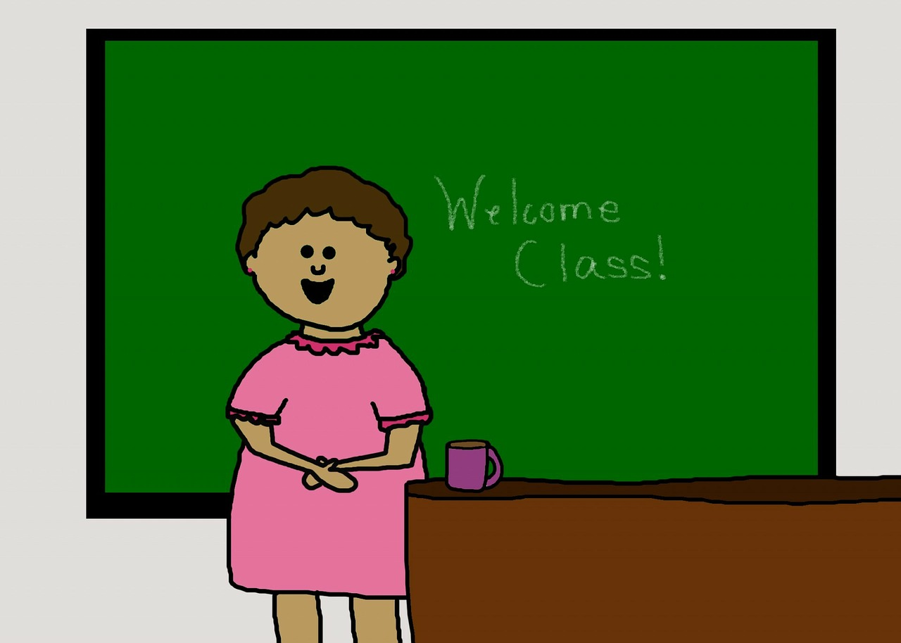

⨳ Привет, друзья! ⨳
В этой статье немного об мне, чтобы вы понимали, с кем имеете дело, и немного о блоге.
Предлагаю взять чаёк/кофеёк ☕ и вкусняшку. Готовы? Тогда начнём!
О себе
Меня зовут Лена. Мне 37 лет. В разводе. У меня есть чудесный сын Рома, ему 10 лет. Он очень творческий, необычный, весёлый мальчишка. Живём мы вместе с моей любимой мамочкой, красивой и мудрой, которая очень мне помогает и поддерживает в любом начинании - а это очень важно!
Ещё с нами живут кот Шнурок или просто Серость, сухопутная черепаха Фуня, два джунгарских хомячка Соня и Стеша, и домовой по имени Катух.

Вот уже почти 12 лет я тружусь в офисе одной важной иностранной организации. Работаю с людьми и бумажками. Я - интроверт, поэтому от общения с людьми достаточно быстро устаю. Но работа мне всегда нравилась. Обычно на вопрос "кем ты работаешь?"я отвечаю - офисный тролль. Хотя некоторые считают, что это звучит обидно, я не согласна.
График работы у меня офисный, а значит часы работы строго определены, и это позволяет легко планировать вечера и выходные. Это хорошо. Но организация у нас маленькая, и такая опция, как продвижение по карьерной лестнице, просто невозможна. Я могу расти только вширь (нарабатывать опыт и получать новые знания), но не вверх. И это уже плохо. Не то, чтобы мне было очень важно построить карьеру, но расти всё же хочется. А с моей работой (при всей моей любви к ней) существует потолок, когда опыта всё больше, а вот новых знаний всё меньше. Я и через 20 лет буду занимать ту же должность в своем отделе. И с одной стороны меня это вполне устраивает с точки зрения стабильности (как моральной, так и материальной), но с другой стороны, несколько лет назад у меня всё чаще стало появляться ощущение, что я не развиваюсь. Знаете, когда сидишь в одном и том же болотце годами, пускаешь одни и те же пузыри каждый день и кажется, что ничего не происходит. На самом деле это не совсем так, но ощущение именно такое.
В связи с тем, что работу я менять не планирую, я стала задумываться о том, что же можно делать ещё, в нерабочее время (благо график работы это позволяет), чтобы развиваться и двигаться вперёд.
Я всегда хотела быть учителем. Даже закончила педагогический университет. Со школой не сложилось, но желание преподавать меня не покидало. На каком-то этапе я стала заниматься репетиторством по английскому языку, и собиралась в качестве вот такой "развивающей меня" деятельности выбрать именно его. Но собиралась долго и за время этих сборов, видимо, перегорела.
О том, почему я выбрала именно создание сайтов, расскажу подробно в отдельном посте.
О блоге
Я решила вести этот блог для нас.
Для вас, чтобы делиться своими взлётами и падениями на новом пути и, может быть, вдохновить кого-то на новые свершения.
Для себя, чтобы "задокументировать" все этапы, не упустить важные уроки и сохранить в памяти значимые моменты.
Я постараюсь, и это тоже одна из целей создания блога, делиться тем, что можно применить не только в обучении созданию сайтов, но и в любой другой учёбе, да и вообще в жизни.
Пока никто не может точно сказать, что получится из всей этой авантюры. НО: не попробуешь, не узнаешь. Я пробовала много разных занятий, в основном творческих. Далеко не всё получалось, к чему-то просто не легла душа, но зато всё, что осталось - приносит удовольствие. Пока правда только удовольствие, денег не приносит.
Блог назвывается "Моя старая новая жизнь", потому что я не собираюсь ничего глобально менять, а значит, всё с большего останется по-старому: и ежедневники, и рукоделие, и учёба, и многое другое. Но в то же время - это новый этап моей жизни, совершенно неизведанная для меня территория, и не знаю, к чему меня всё это приведёт.
Этот сайт очень простой. Я учусь всего второй месяц, поэтому всё просто, местами даже примитивно. Однако, учитывая то, что ещё несколько дней назад на экране была пустая белая страница, я собой горжусь.
Пока блог можно только читать. Но по мере продвижения в учёбе, я буду обновлять и совершенствовать и структуру, и оформление, и функционал. Со временем вы сможете оценить пост, написать комментарий, выбирать статьи по темам и многое другое. И, честно говоря, мне уже очень хочется всё это уметь. Но не всё сразу. Мне ещё многому предстоит научиться прежде, чем всё это станет возможным. Хотя, даже за время создания этого простого блога я "прокачала" многие навыки, приобрела бесценный опыт и уложила свои знания в организованную систему.
Вот так вместе мы и будем проходить этот путь. И я очень надеюсь на вашу поддержку.
Спасибо за время и внимание ♥
До встречи в новых постах!Обнимаю, Ваша Я ♥